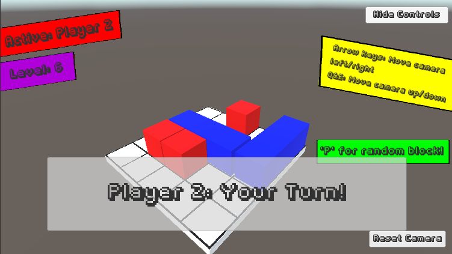

Contact Info:
Email: ffirican@student.fitchburgstate.edu
Phone: 508-369-4651
My name is Frank Firicano. I am a senior computer science student at Fitchburg State University. This is my portfolio. Please excuse its current state.
Here are some projects I have worked on throughout the semester.
A 2D shooter I created for my Game Design Workshop class. Download here
A 2D platformer I created with a team for my Game Design Workshop class with Tom Spinelli. I was the main programmer. Download here
A 3D puzzle game I created as a final project for my Game Design Workshop class. Download here